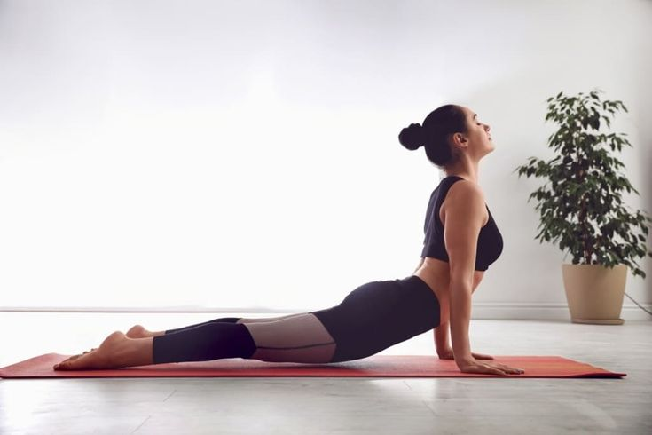
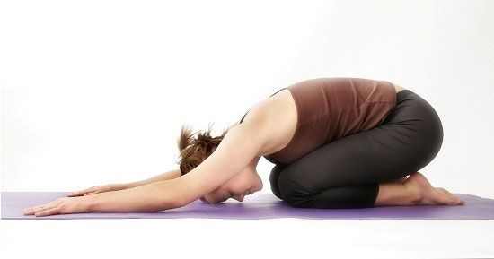
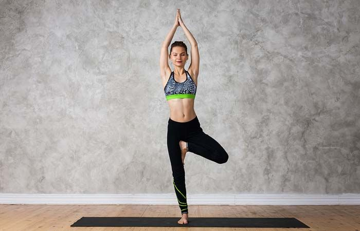
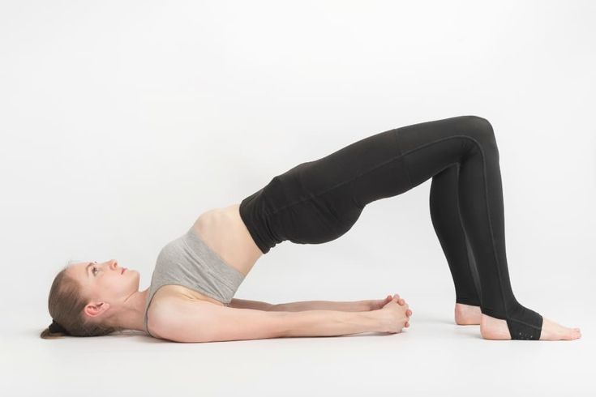
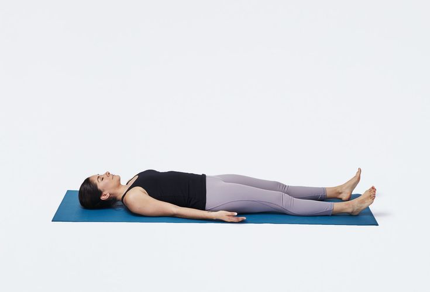
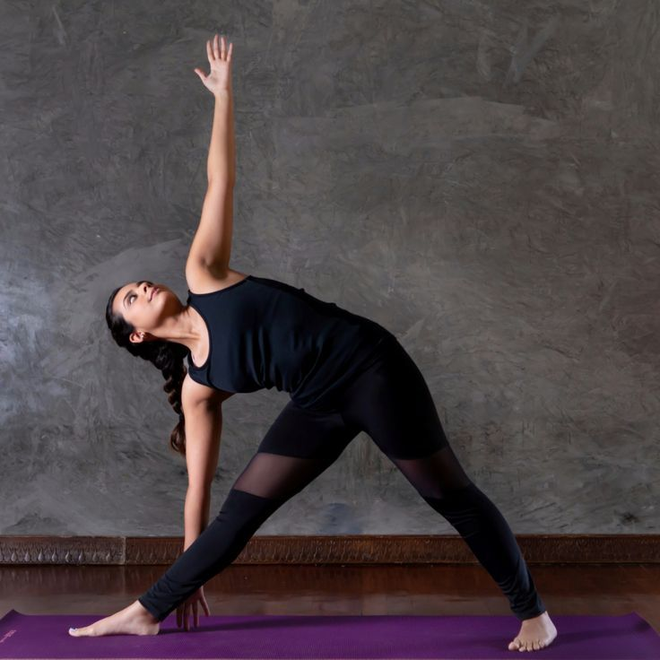

Standing Poses
Mountain Pose (Tadasana)
Instructions
Description: A basic standing pose that promotes balance and alignment.
Stand tall with feet together, arms at your sides, and engage your thigh muscles. Lift your chest and breathe deeply.
Benefits: Improves posture, strengthens legs, and promotes a sense of balance.
Forward Bending Poses
Downward-Facing Dog (Adho Mukha Svanasana)
Instructions
Description: An inverted pose that stretches the spine, hamstrings, and calves.
Start on hands and knees, lift your hips, straighten your legs to form an inverted “V” shape. Keep your head between your arms and heels pressing down.

Standing Pose
Warrior I (Virabhadrasana I)
Instructions
Description: Strengthens legs and opens the chest, enhancing focus and stability.
Step one foot back, bend the front knee, and raise your arms overhead. Keep hips facing forward.
Benefits: Strengthens legs, opens hips and chest, and improves focus.

Backbending Poses
Cobra Pose (Bhujangasana)
Instructions
Description: Balances the body and strengthens the legs.
Lie on your stomach, place hands under shoulders, and gently lift your chest while keeping elbows close to your body.
Benefits: Strengthens the spine, stretches the chest and lungs, and relieves lower back pain.

Restorative Poses
Child’s Pose (Balasana)
Instructions
Description: A calming pose that gently stretches the back and shoulders.
Kneel on the floor, sit back on your heels, and extend your arms forward while lowering your chest to the mat.
Benefits: Relieves stress, gently stretches the lower back and shoulders, and calms the mind.

Balancing Poses
Tree Pose (Vrikshasana)
Instructions
Description: Balances the body and strengthens the legs.
Stand on one leg, place the other foot on the inner thigh, and bring hands together in prayer or reach overhead.
Benefits: Improves balance, strengthens legs, and promotes concentration.

Backbending Poses
Bridge Pose (Setu Bandhasana)
Instructions
Description: Strengthens the back and glutes while stretching the chest and spine.
Lie on your back, bend knees with feet flat on the ground, and lift your hips while pressing into your feet and shoulders.
Benefits: Strengthens the back, glutes, and legs, and stretches the chest and spine.

Restorative Poses
Corpse Pose (Savasana)
Instructions
Description: A meditative pose for relaxation and stress reduction.
ie flat on your back with legs and arms relaxed, palms facing up. Close your eyes and breathe deeply.
Benefits: Promotes relaxation, reduces stress, and allows the body to absorb the benefits of the practice.

Balancing Poses
Triangle Pose (Trikonasana)
Instructions
Description: Stretches the legs and spine, improving stability and flexibility.
Stand with feet wide, turn one foot out, extend arms, and lean forward to touch the ankle while the other arm reaches up.It involves stretching the body sideways to create a triangular shape.
Benefits: Stretches body, improves flexibility, and enhances stability.